OH CMLL Algorithms
One-handed CMLL algorithms for the last-layer corners step of the Roux method, tuned for one-handed fingertricks. Each diagram shows the exact corner case (via visualcube); all algorithms under one diagram solve the same case — AUF variants are merged.
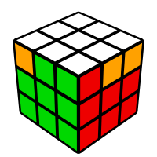
R U' F U' R' U' R U F' U2' R'R U R' F' R U R' U' R' F R2 U' R'z U R2' U' R2 F' R U R' U' R' F z'U' F R U' R' U R U R' F'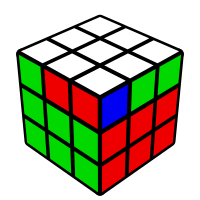
R U2 R' U' R U2 L' U R' U' LR' U2' R U R' U2' L U' R U L'r' U2' R U R' U' U' z U R' D R u' z'U2 F R U R' U' R' U R U' F' U R' U' R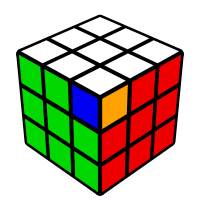
R' U R U' R' f' U' R U2 R' U' R U' R' f RF R U' R' U' R U R' F' R U R' U' R' F R F'R U2' R' U2 F' R U' R' F R' F' R Fx U' R' U R U' x' R U R' F U2' R U2 R'R' U R U' x' U R U2 R' U' R U' R' U2 R U R' U' xR' U2 R U F U' R' U2 R U F'F R U' R' U R U R' U R U' R' F'R' U' R U' R' U R U' R' U F' U F R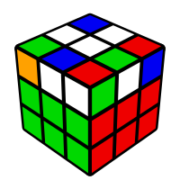
U R' U' R U' R' U R U' R' U2 RU R U R' U R U' R' U R U2' R'U' R U R' U R U r' F R' F' rU' R' U' R U' R' U' z U R' D R U' z'U' R U R' U R U L' U R' U' LU' R' U' R U' R' U' z U z' U' R U L'F R U R' U' R U R' U' F'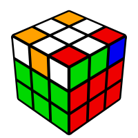
R' U2' R U R' U' R U R' U RU2 F U R U' R' U R U' R' F'R U2 R2 U' R2 U' R2 U2 RU2 R' F R F' r U' R' U' R U' r'U2 R' F R F' r U' r' U' R U' R'U2 r' F R F' r U' R' U' R U' R'U2 R U' R' U2' R U R' U2' R U R' U R U' R'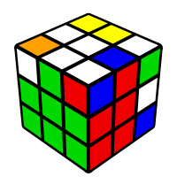
r' U2' R U' R' U' R U R' U r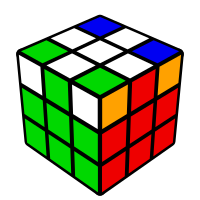
F R U R' U' R U R' U' R U R' U' F'U' R' U' R' F R F' R U' R' U2' R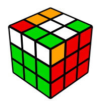
U' F R U R' U' R U' R' U R U R' F'U F U R U' R' U R U2' R' U' R U R' F'U2 R' F' U' F U' R U R' U' R U R' U R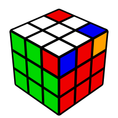
U F R U' R' U R U2 R' U' R U R' U' F'R2 D' R U2 R' D R U2 Rr2 D' R U2 R' D R U2 Rx l2 x D' R U2 R' D R U2 R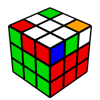
R' U2' R U R' U' R U2 R f' U' fU R U R' U R U2 R'U r U' r' F R' F' RU R U' r' F R' F' r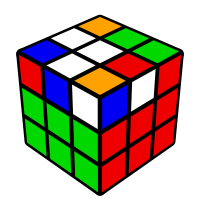
U F R' F' R U2 R U' R' U R U2 R'U F U R U' R2 F' R U2 R U2 R'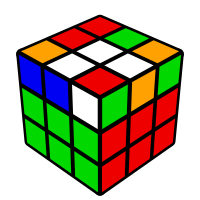
U' F R U' R' U' R U R' U R U' R' F'U F U R U2' R' U' R U R' F'U2 R' U' R U' R' U2 F R F' r U r'F U' R' U R U F' U2 R f' U' fU R U R' U' R' F R F' R U R' U R U2' R'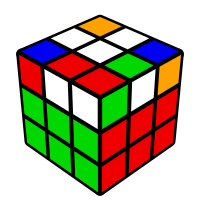
R U2 R' U' R U R' U2 R' F R F'R U2 R' U2 R' F R2 U R' U' F'U R' U' R U' R' U2 RU r' U' R U' R' U2 r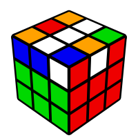
U2 R' U' R U' R' U F' U F RU F R' F' R U2 R U2 R'U M' F R' F' r U2 R U2 R'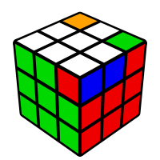
R' U2' R U2 F U' R' U R U F'R' U' R U' R' U2' R2 U R' U R U2' R'U' R' U' R U R' U R U2' R' U R U2' R' U' RU R' U' R U' R' U R U' R' U R U' R' U2' R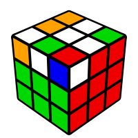
r U' r' U' r U' r' U' F' U2 FU' F R U R' U' F'R' U' R U' R' U R' F R F' U RU2 R' U' R U' F U' R' U' R U F'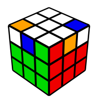
R' U R U2 R U2 R' U' R U' f' U' fU2 R U R' U R U' R' U R U' R' U R U2 R'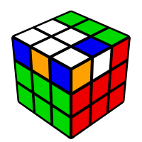
U R' U R U' F U R' U' R U R U' R' F'r U' r' F R' F' U2' R U R' U R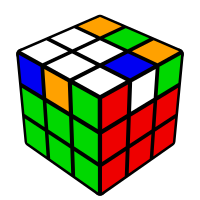
U F U R U' R' F'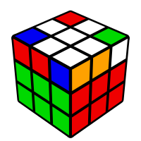
U' R U R' U' R' F R F'U' r U R' U' r' F R F'U2 R' U2 R U R' U R2 U2 R' U' R U' R'R' U2 R U R' U RU' R' U2' R U2 R f' U' fU R' U' R U' R U R' U R U2 f' U' f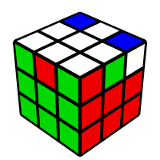
U' R' U' R U R f' U' fR U2 R' U' R U' R2 U2 R U R' U RU2 R U2 R' U' R U' R'U' R U2 R' U2 R' F R F'U F U' R' U' R U F' U2' R' U2 RR' U' R U' R' U2' R2 U R' U' R' F R F'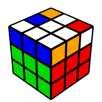
r' U r U2 R2 F R F' RR' U R U2 R' L' U R U' r x'R' U r U2 R2 F R F' r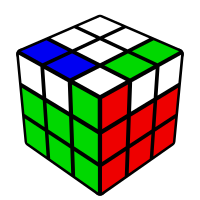
U2 F R U R' U' R U' R' U' R U R' F'F R' F' R U R U' R'U' R' U2 R' D' R U2 R' D R2U' R' U2 R' D' R U2 R' D r2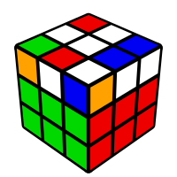
U' R U R' U R' F R F' R U2 R'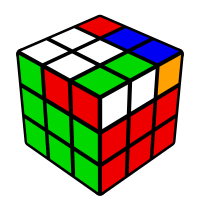
U2 F R U' R' U R U2 R' U' F'U' F' r U r' U2 r' F2 r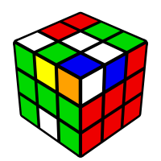
U' R' F R F' r U r'U' r' F R F' r U R'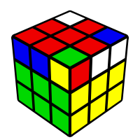
U R' U z U R' D R U'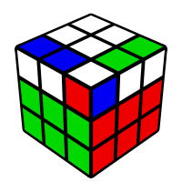
U R U2 R' F R' F' R U' R U' R'F R U' R' U' R U R' F'R U2 R2 F R F' R U2' R'R U2 r2 F R F' R U2' R'